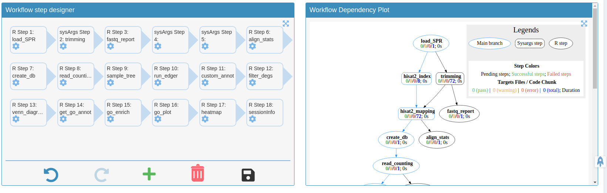
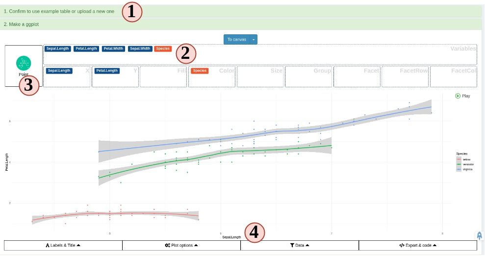
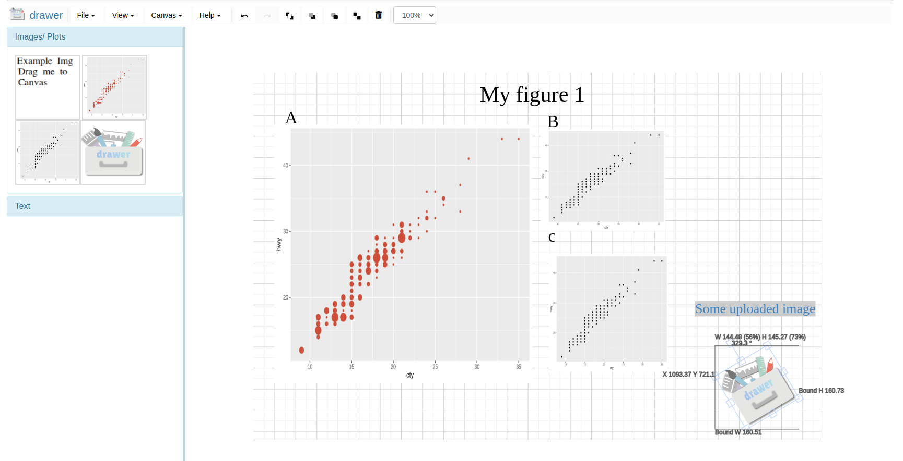
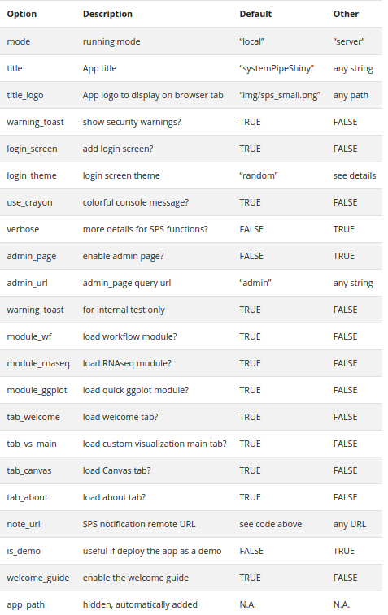

systemPipe: Workflow and Visualization Toolkit
Last update: 06 August, 2021
systemPipeWorkshop2021.RmdAuthors: Daniela Cassol (danielac@ucr.edu), Le Zhang (le.zhang001@email.ucr.edu), Thomas Girke (thomas.girke@ucr.edu).
Institution: Institute for Integrative Genome Biology, University of California, Riverside, California, USA.
Overview of systemPipe toolkit
systemPipe (SP) is a generic toolkit for designing and running reproducible data analysis workflows. The environment consists of three major modules implemented as R/Bioconductor packages:
systemPipeR(SPR) provides core functionalities for defining, designing and running workflows, interacting with both R and/or command-line software, as well as generating publication-quality analysis reports.systemPipeShiny(SPS) integrates a graphical user interface for managing workflows and visualizing results interactively.systemPipeWorkflow(SPW) offers a collection of pre-configured workflow templates.
For more details, please see the presentation slides.
Introduction to SPR’s command-line interface
A central concept for designing workflows within the systemPipeR (H Backman and Girke 2016) environment is the use of workflow management containers (see Figure 1).
systemPipeR adopted the widely used community standard Common Workflow Language (CWL) (Amstutz et al. 2016) for describing analysis workflows in a generic and reproducible manner.
Using this community standard in systemPipeR has many advantages. For instance, systemPipeR's CWL interface is that it provides two options to run command-line tools and workflows based on CWL. First, one can run CWL in its native way via an R-based wrapper utility for cwl-runner or cwl-tools (CWL-based approach). Second, one can run workflows using CWL’s command-line and workflow instructions from within R (R-based approach). In the latter case the same CWL workflow definition files (e.g. .cwl and .yml) are used but rendered and executed entirely with R functions defined by systemPipeR, and thus use CWL mainly as a command-line and workflow definition format rather than software to run workflows. Moreover, systemPipeR provides several convenience functions that are useful for designing and debugging workflows, such as a command-line rendering function to retrieve the exact command-line strings for each step prior to running a command-line.
systemPipeR also includes support for both command-line and R/Bioconductor software as well as resources for containerization, parallel evaluations on computer clusters along with automated generation of interactive analysis reports.

Figure 1. Relevant features in systemPipeR. Workflow design concepts are illustrated under A. Examples of systemPipeR’s visualization functionalities are given under B.
The connectivity among workflow steps is defined by the SYSargsList workflow management class. This S4 class is a list-like container where each instance stores all the input/output paths and parameter components required for a particular data analysis step (see Figure 2).
The SYSargsList constructor function will generate the instances, using as data input initial targets files, as well as two-parameter files (for details, see below). When running preconfigured workflows, the only input the user needs to provide is the initial targets file containing the paths to the input files (e.g. FASTQ) along with unique sample labels. Subsequent targets instances are created automatically, based on the connectivity establish between the steps. The parameters required for running command-line software is provided by the parameter (*.cwl and *.yml) files described below.
SYSargsList stores one or multiple steps. It defines and controls each step, allows status checking, as well as monitoring complex workflows from start to finish.

Figure 2. Workflow steps with input/output file operations are controlled by SYSargsList instances. The only input provided by the user is the initial targets file, which can be optional. Subsequent targets instances are created automatically, from the previous output files. Any number of predefined or custom workflow steps are supported.
Workshop
Running the Workshop
This workshop uses R 4.1.0 and Bioconductor version3.14. Bioconductor can be installed following these instructions.
During the Bioc2021 conference, the workshop can be run in the preconfigured Orchestra Platform.
Workshop setup with Docker
The Docker container used by this workshop runs with Bioconductor’s development version 3.14. It includes all the necessary packages and software for running the code of the workshop. To use the Docker container, one needs to first install Docker on a user’s system.
- The container can be downloaded and run with:
docker run -e PASSWORD=systempipe -p 8787:8787 systempipe/systempipeworkshop2021:latestLog in to RStudio at http://localhost:8787 using username
rstudioand passwordsystempipe.If you prefer to run the workshop from the command-line, please use:
docker run -it --user rstudio systempipe/systempipeworkshop2021:latest bash Workshop setup with GitHub
systemPipeR and systemPipeShiny environment can be installed from the R console using the BiocManager::install command. The associated data package systemPipeRdata can be installed the same way. The latter is a helper package for generating systemPipeR workflow environments with a single command containing all parameter files and sample data required to quickly test and run workflows.
To install all packages required for this workshop on a local system, one can use the following install commands.
## Install workshop package
BiocManager::install("systemPipeR/systemPipeWorkshop2021")
## Install required packages
BiocManager::install(c("systemPipeR", "systemPipeRdata", "systemPipeShiny"), version="3.14")To access the workshop vignette:
browseVignettes(package = "systemPipeWorkshop2021")Getting Started
Load sample data and directory structure
systemPipeRdata::genWorkenvir("rnaseq", mydirname = "bioc2021")
#> [1] "Generated bioc2021 directory. Next run in rnaseq directory, the R code from *.Rmd template interactively. Alternatively, workflows can be exectued with a single command as instructed in the vignette."
setwd("bioc2021")How to find help
All questions about the package or any particular function should be posted to the Bioconductor support site https://support.bioconductor.org.
Please add the “systemPipeR” tag to your question. This triggers an email alert that will be send to the authors.
We also appreciate receiving suggestions for improvements and/or bug reports by opening issues on GitHub.
Design and Run Workflow - Quick Start
Showcase of toy RNA-Seq workflow
If you desire to generate and run a RNA-seq workflow in a few (here highly simplfied) steps, please follow:
sal <- SPRproject()
sal <- importWF(sal, file_path = "systemPipeRNAseq_importWF.Rmd", verbose = TRUE)
sal <- runWF(sal)
sal <- renderLogs(sal)
plotWF(sal, rstudio = TRUE)
Figure 3. systemPipeR’s workflow structure, showing the dependency between steps and the status of each step.
Explore Workflow Design and Run Parameters
Structure of parameters files
The parameters required for running command-line software are provided by adopting the widely used CWL (Common Workflow Language) community standard (Amstutz et al. 2016). Parameter files are only required for command-line steps.
An overview of the CWL syntax is provided in the article, while the here section explains how target files can be used for CWL-based workflow steps.
Automate creation of CWL parameters
Users need to define the command-line in a pseudo-bash script format:
# "hisat2 -S ./results/M1A.sam -x ./data/tair10.fasta -k 1 -threads 4 -U ./data/SRR446027_1.fastq.gz "
command <- "
hisat2 \
-S <F, out: ./results/M1A.sam> \
-x <F: ./data/tair10.fasta> \
-k <int: 1> \
-threads <int: 4> \
-U <F: ./data/SRR446027_1.fastq.gz>
"Define prefix and defaults
First line is the base command. Each line is an argument with its default value.
For argument lines (starting from the second line), any word before the first space with leading
-or--in each will be treated as a prefix, like-Sor--min. Any line without this first word will be treated as no prefix.All defaults are placed inside
<...>.First argument is the input argument type.
Ffor “File,” “int,” “string” are unchanged.Optional: use the keyword
outfollowed the type with a,comma separation to indicate if this argument is also an CWL output.Then, use
:to separate keywords and default values, any non-space value after the:will be treated as the default value.If any argument has no default value, just a flag, like
--verbose, there is no need to add any<...>
createParam Function
createParam function requires the string as defined above as an input.
First of all, the function will print the three components of the cwl file: - BaseCommand: Specifies the program to execute. - Inputs: Defines the input parameters of the process. - Outputs: Defines the parameters representing the output of the process.
The four component is the original command-line.
If in interactive mode, the function will verify that everything is correct and will ask you to proceed. Here, the user can answer “no” and provide more information at the string level. Another question is to save the param created here.
If running the workflow in non-interactive mode, the createParam function will consider “yes” and returning the container.
cmd <- createParam(command, writeParamFiles = TRUE)
#> *****BaseCommand*****
#> hisat2
#> *****Inputs*****
#> S:
#> type: File
#> preF: -S
#> yml: ./results/M1A.sam
#> x:
#> type: File
#> preF: -x
#> yml: ./data/tair10.fasta
#> k:
#> type: int
#> preF: -k
#> yml: 1
#> threads:
#> type: int
#> preF: -threads
#> yml: 4
#> U:
#> type: File
#> preF: -U
#> yml: ./data/SRR446027_1.fastq.gz
#> *****Outputs*****
#> output1:
#> type: File
#> value: ./results/M1A.sam
#> *****Parsed raw command line*****
#> hisat2 -S ./results/M1A.sam -x ./data/tair10.fasta -k 1 -threads 4 -U ./data/SRR446027_1.fastq.gz
#> Written content of 'commandLine' to file:
#> param/cwl/hisat2/hisat2.cwl
#> Written content of 'commandLine' to file:
#> param/cwl/hisat2/hisat2.yml
How to connect CWL description files within systemPipeR
This article explore the connectivity between the CWL parameters files and systemPipeR workflow management class. In addition, we will show how the workflow can be easily scalable with systemPipeR.
Project initialization
To create a workflow within systemPipeR, we can start by defining an empty workflow container and checking the directory structure:
sal <- SPRproject(projPath = getwd())
#> Creating directory '/home/dcassol/danielac@ucr.edu/projects/BioC2021_Workshop/systemPipeWorkshop2021/vignettes/bioc2021/.SPRproject'
#> Creating file '/home/dcassol/danielac@ucr.edu/projects/BioC2021_Workshop/systemPipeWorkshop2021/vignettes/bioc2021/.SPRproject/SYSargsList.yml'Internally, SPRproject function creates a hidden folder called .SPRproject, by default, to store all the log files. A YAML file, here called SYSargsList.yml, also has been created, which initially contains the basic location of the project structure; however, every time the workflow object sal is updated in R, the new information will also be saved in this flat-file database for easy recovery. If you desire different names for the logs folder and the YAML file, these can be modified as follows:
sal <- SPRproject(logs.dir= ".SPRproject", sys.file=".SPRproject/SYSargsList.yml") Also, this function will check and/or create the basic folder structure if missing, which means data, param, and results directories, as described here. If the user wants to use a different names for these directories, can be specified as follows:
sal <- SPRproject(data = "data", param = "param", results = "results") It is possible to isolate all the R objects created within the workflow analysis from the current environment. SPRproject function provides the option to create a new environment, and in this way, it is not overwriting any object you may want to have at your current section.
sal <- SPRproject(envir = new.env()) In this stage, the object sal is a empty container, except for the project information. The project information can be accessed by the projectInfo method:
sal
#> Instance of 'SYSargsList':
#> No workflow steps added
projectInfo(sal)
#> $project
#> [1] "/home/dcassol/danielac@ucr.edu/projects/BioC2021_Workshop/systemPipeWorkshop2021/vignettes/bioc2021"
#>
#> $data
#> [1] "data"
#>
#> $param
#> [1] "param"
#>
#> $results
#> [1] "results"
#>
#> $logsDir
#> [1] ".SPRproject"
#>
#> $sysargslist
#> [1] ".SPRproject/SYSargsList.yml"Also, the length function will return how many steps this workflow contains and in this case it is empty, as follow:
length(sal)
#> [1] 0Workflow Design
systemPipeR workflows can be designed and built from start to finish with a single command, importing from an R Markdown file or stepwise in interactive mode from the R console. In the next section, we will demonstrate how to build the workflow in an interactive mode.
New workflows are constructed, or existing ones modified, by connecting each step via appendStep method. Each SYSargsList instance contains instructions needed for processing a set of input files with a specific command-line or R software, as well as the paths to the corresponding outfiles generated by a particular tool/step.
To build R code based step, the constructor function Linewise is used. For more details about this S4 class container, see here.
Build workflow interactive
This tutorial shows a very simple example for describing and explaining all main features available within systemPipeR to design, build, manage, run, and visualize the workflow. In summary, we are exporting a dataset to multiple files, compressing and decompressing each one of the files, and importing to R, and finally performing a statistical analysis.
In the previous section, we initialize the project by building the sal object. Until this moment, the container has no steps:
sal
#> Instance of 'SYSargsList':
#> No workflow steps addedNext, we need to populate the object created with the first step in the workflow.
Adding the first step
First, we need to populate the object created with the first step in the workflow. Here, an example of how to perform this task using parameters template files for trimming FASTQ files with Trimmomatic software (Bolger, Lohse, and Usadel 2014).
The constructor function creates an SYSargsList S4 class object using data from three input files:
- CWL command-line specification file (`wf_file` argument);
- Input variables (`input_file` argument);
- Targets file (`targets` argument).In CWL, files with the extension .cwl define the parameters of a chosen command-line step or workflow, while files with the extension .yml define the input variables of command-line steps.
The targets file is optional for workflow steps lacking input files. The connection between input variables and the targets file is defined under the inputvars argument. It is required a named vector, where each element name needs to match with column names in the targets file, and the value must match the names of the input variables defined in the *.yml files (see Figure 2).
A detailed description of the dynamic between input variables and targets files can be found here. In addition, the CWL syntax overview can be found here.
Besides all the data form targets, wf_file, input_file and dir_path arguments, SYSargsList constructor function options include:
-
step_name: a unique name for the step. This is not mandatory; however, it is highly recommended. If no name is provided, a defaultstep_x, wherexreflects the step index, will be added. -
dir: this option allows creating an exclusive subdirectory for the step in the workflow. All the outfiles and log files for this particular step will be generated in the respective folders. -
dependency: after the first step, all the additional steps appended to the workflow require the information of the dependency tree.
The appendStep<- method is used to append a new step in the workflow.
sal <- SPRproject(overwrite = TRUE)
#> Recreating directory '/home/dcassol/danielac@ucr.edu/projects/BioC2021_Workshop/systemPipeWorkshop2021/vignettes/bioc2021/.SPRproject'
#> Creating file '/home/dcassol/danielac@ucr.edu/projects/BioC2021_Workshop/systemPipeWorkshop2021/vignettes/bioc2021/.SPRproject/SYSargsList.yml'
targetspath <- "targetsPE.txt"
appendStep(sal) <- SYSargsList(
step_name = "trimming",
targets = targetspath,
wf_file = "trimmomatic/trimmomatic-pe.cwl", input_file = "trimmomatic/trimmomatic-pe.yml",
dir_path = "param/cwl",
inputvars = c(FileName1="_FASTQ_PATH1_", FileName2="_FASTQ_PATH2_", SampleName = "_SampleName_"))For a brief overview of the workflow, we can check the object as follows:
sal
#> Instance of 'SYSargsList':
#> WF Steps:
#> 1. trimming --> Status: Pending
#> Total Files: 72 | Existing: 0 | Missing: 72
#> 1.1. trimmomatic-pe
#> cmdlist: 18 | Pending: 18
#> Also, for printing and double-check the command-lines in the step, we can use the cmdlist method:
cmdlist(sal, targets = 1:2)
#> $trimming
#> $trimming$M1A
#> $trimming$M1A$`trimmomatic-pe`
#> [1] "trimmomatic PE -phred33 ./data/SRR446027_1.fastq.gz ./data/SRR446027_2.fastq.gz results/M1A_1P.trimmed.fastq.gz results/M1A_1U.trimmed.fastq.gz results/M1A_2P.trimmed.fastq.gz results/M1A_2U.trimmed.fastq.gz -threads 4 MINLEN:35 LEADING:3 TRAILING:3 SLIDINGWINDOW:4:5"
#>
#>
#> $trimming$M1B
#> $trimming$M1B$`trimmomatic-pe`
#> [1] "trimmomatic PE -phred33 ./data/SRR446028_1.fastq.gz ./data/SRR446028_2.fastq.gz results/M1B_1P.trimmed.fastq.gz results/M1B_1U.trimmed.fastq.gz results/M1B_2P.trimmed.fastq.gz results/M1B_2U.trimmed.fastq.gz -threads 4 MINLEN:35 LEADING:3 TRAILING:3 SLIDINGWINDOW:4:5"Adding more steps
The following steps will demonstrate how to use the short read aligner Hisat2 (Kim, Langmead, and Salzberg 2015) in both interactive job submissions and batch submissions to queuing systems of clusters using the systemPipeR's new CWL command-line interface.
appendStep(sal) <- SYSargsList(
step_name = "hisat2_index",
targets = NULL, dir = FALSE,
wf_file = "hisat2/hisat2-index.cwl",
input_file = "hisat2/hisat2-index.yml",
dir_path = "param/cwl",
dependency = "trimming"
)For a overview of the workflow, we can check the object as follows:
sal
#> Instance of 'SYSargsList':
#> WF Steps:
#> 1. trimming --> Status: Pending
#> Total Files: 72 | Existing: 0 | Missing: 72
#> 1.1. trimmomatic-pe
#> cmdlist: 18 | Pending: 18
#> 2. hisat2_index --> Status: Pending
#> Total Files: 8 | Existing: 0 | Missing: 8
#> 2.1. hisat2-index
#> cmdlist: 1 | Pending: 1
#> Note that we have two steps, and it is expected 16 files from the first step and 8 outfiles for the second step. Also, the workflow status is Pending, which means the workflow object is rendered in R; however, we did not execute the workflow yet. In addition to this summary, it can be observed this step has four command-lines.
For more details about the command-line rendered for each target file, it can be checked as follows:
cmdlist(sal, step = "hisat2_index")
#> $hisat2_index
#> $hisat2_index$defaultid
#> $hisat2_index$defaultid$`hisat2-index`
#> [1] "hisat2-build ./data/tair10.fasta ./data/tair10.fasta "
Using the outfiles for the next step
For building this step, all the previous procedures are being used to append the next step. However, here, we can observe power features that build the connectivity between steps in the workflow.
In this example, we would like to use the outfiles from trimming Step, as input from the next step, which is the Mapping. In this case, let’s look at the outfiles from the first step:
outfiles(sal)[1]
#> $trimming
#> DataFrame with 18 rows and 4 columns
#> trimmomatic_1_paired trimmomatic_1_unpaired trimmomatic_2_paired
#> <character> <character> <character>
#> 1 results/M1A_1P.trimm.. results/M1A_1U.trimm.. results/M1A_2P.trimm..
#> 2 results/M1B_1P.trimm.. results/M1B_1U.trimm.. results/M1B_2P.trimm..
#> 3 results/A1A_1P.trimm.. results/A1A_1U.trimm.. results/A1A_2P.trimm..
#> 4 results/A1B_1P.trimm.. results/A1B_1U.trimm.. results/A1B_2P.trimm..
#> 5 results/V1A_1P.trimm.. results/V1A_1U.trimm.. results/V1A_2P.trimm..
#> ... ... ... ...
#> 14 results/M12B_1P.trim.. results/M12B_1U.trim.. results/M12B_2P.trim..
#> 15 results/A12A_1P.trim.. results/A12A_1U.trim.. results/A12A_2P.trim..
#> 16 results/A12B_1P.trim.. results/A12B_1U.trim.. results/A12B_2P.trim..
#> 17 results/V12A_1P.trim.. results/V12A_1U.trim.. results/V12A_2P.trim..
#> 18 results/V12B_1P.trim.. results/V12B_1U.trim.. results/V12B_2P.trim..
#> trimmomatic_2_unpaired
#> <character>
#> 1 results/M1A_2U.trimm..
#> 2 results/M1B_2U.trimm..
#> 3 results/A1A_2U.trimm..
#> 4 results/A1B_2U.trimm..
#> 5 results/V1A_2U.trimm..
#> ... ...
#> 14 results/M12B_2U.trim..
#> 15 results/A12A_2U.trim..
#> 16 results/A12B_2U.trim..
#> 17 results/V12A_2U.trim..
#> 18 results/V12B_2U.trim..The two-column the user may want to use are “trimmomatic_1_paired” and “trimmomatic_2_paired.” F or the argument targets in the SYSargsList function, it should provide the name of the correspondent step in the Workflow and which outfiles you would like to be incorporated in the next step.
The argument inputvars allows the connectivity between outfiles and the new targets file. Here, the name of the previous outfiles should be provided it. Please note that all outfiles column names must be unique.
It is possible to keep all the original columns from the targets files or remove some columns for a clean targets file. The argument rm_targets_col provides this flexibility, where it is possible to specify the names of the columns that should be removed. If no names are passing here, the new columns will be appended.
In addition, a useful utility establishes a dependency among the steps in the workflow, and this is possible with the dependency argument, where the names of steps are specified.
appendStep(sal) <- SYSargsList(
step_name = "hisat2_mapping",
targets = "trimming", dir = TRUE,
wf_file = "workflow-hisat2/workflow_hisat2-pe.cwl",
input_file = "workflow-hisat2/workflow_hisat2-pe.yml",
dir_path = "param/cwl",
inputvars = c(trimmomatic_1_paired = "_FASTQ_PATH1_", trimmomatic_2_paired = "_FASTQ_PATH2_",
SampleName = "_SampleName_"),
rm_targets_col = c("FileName1", "FileName2"),
dependency = c("trimming", "hisat2_index")
)We can check the targets automatically create for this step, based on the previous outfiles:
targetsWF(sal[3])
#> $hisat2_mapping
#> DataFrame with 18 rows and 7 columns
#> trimmomatic_1_paired trimmomatic_2_paired SampleName Factor
#> <character> <character> <character> <character>
#> 1 results/M1A_1P.trimm.. results/M1A_2P.trimm.. M1A M1
#> 2 results/M1B_1P.trimm.. results/M1B_2P.trimm.. M1B M1
#> 3 results/A1A_1P.trimm.. results/A1A_2P.trimm.. A1A A1
#> 4 results/A1B_1P.trimm.. results/A1B_2P.trimm.. A1B A1
#> 5 results/V1A_1P.trimm.. results/V1A_2P.trimm.. V1A V1
#> ... ... ... ... ...
#> 14 results/M12B_1P.trim.. results/M12B_2P.trim.. M12B M12
#> 15 results/A12A_1P.trim.. results/A12A_2P.trim.. A12A A12
#> 16 results/A12B_1P.trim.. results/A12B_2P.trim.. A12B A12
#> 17 results/V12A_1P.trim.. results/V12A_2P.trim.. V12A V12
#> 18 results/V12B_1P.trim.. results/V12B_2P.trim.. V12B V12
#> SampleLong Experiment Date
#> <character> <character> <character>
#> 1 Mock.1h.A 1 23-Mar-2012
#> 2 Mock.1h.B 1 23-Mar-2012
#> 3 Avr.1h.A 1 23-Mar-2012
#> 4 Avr.1h.B 1 23-Mar-2012
#> 5 Vir.1h.A 1 23-Mar-2012
#> ... ... ... ...
#> 14 Mock.12h.B 1 23-Mar-2012
#> 15 Avr.12h.A 1 23-Mar-2012
#> 16 Avr.12h.B 1 23-Mar-2012
#> 17 Vir.12h.A 1 23-Mar-2012
#> 18 Vir.12h.B 1 23-Mar-2012We can also check all the expected outfiles for this particular step, as follows:
outfiles(sal[3])
#> $hisat2_mapping
#> DataFrame with 18 rows and 4 columns
#> hisat2_sam samtools_bam samtools_sort_bam
#> <character> <character> <character>
#> 1 ./results/M1A.sam ./results/M1A.bam ./results/M1A.sorted..
#> 2 ./results/M1B.sam ./results/M1B.bam ./results/M1B.sorted..
#> 3 ./results/A1A.sam ./results/A1A.bam ./results/A1A.sorted..
#> 4 ./results/A1B.sam ./results/A1B.bam ./results/A1B.sorted..
#> 5 ./results/V1A.sam ./results/V1A.bam ./results/V1A.sorted..
#> ... ... ... ...
#> 14 ./results/M12B.sam ./results/M12B.bam ./results/M12B.sorte..
#> 15 ./results/A12A.sam ./results/A12A.bam ./results/A12A.sorte..
#> 16 ./results/A12B.sam ./results/A12B.bam ./results/A12B.sorte..
#> 17 ./results/V12A.sam ./results/V12A.bam ./results/V12A.sorte..
#> 18 ./results/V12B.sam ./results/V12B.bam ./results/V12B.sorte..
#> samtools_index
#> <character>
#> 1 ./results/M1A.sorted..
#> 2 ./results/M1B.sorted..
#> 3 ./results/A1A.sorted..
#> 4 ./results/A1B.sorted..
#> 5 ./results/V1A.sorted..
#> ... ...
#> 14 ./results/M12B.sorte..
#> 15 ./results/A12A.sorte..
#> 16 ./results/A12B.sorte..
#> 17 ./results/V12A.sorte..
#> 18 ./results/V12B.sorte..Now, we can observe that the third step has been added and contains one substep.
sal
#> Instance of 'SYSargsList':
#> WF Steps:
#> 1. trimming --> Status: Pending
#> Total Files: 72 | Existing: 0 | Missing: 72
#> 1.1. trimmomatic-pe
#> cmdlist: 18 | Pending: 18
#> 2. hisat2_index --> Status: Pending
#> Total Files: 8 | Existing: 0 | Missing: 8
#> 2.1. hisat2-index
#> cmdlist: 1 | Pending: 1
#> 3. hisat2_mapping --> Status: Pending
#> Total Files: 72 | Existing: 0 | Missing: 72
#> 3.1. hisat2
#> cmdlist: 18 | Pending: 18
#> 3.2. samtools-view
#> cmdlist: 18 | Pending: 18
#> 3.3. samtools-sort
#> cmdlist: 18 | Pending: 18
#> 3.4. samtools-index
#> cmdlist: 18 | Pending: 18
#> In addition, we can access all the command-lines for each one of the substeps.
cmdlist(sal["hisat2_mapping"], targets = 1)
#> $hisat2_mapping
#> $hisat2_mapping$M1A
#> $hisat2_mapping$M1A$hisat2
#> [1] "hisat2 -S ./results/M1A.sam -x ./data/tair10.fasta -k 1 --min-intronlen 30 --max-intronlen 3000 -1 results/M1A_1P.trimmed.fastq.gz -2 results/M1A_2P.trimmed.fastq.gz --threads 4"
#>
#> $hisat2_mapping$M1A$`samtools-view`
#> [1] "samtools view -bS -o ./results/M1A.bam ./results/M1A.sam "
#>
#> $hisat2_mapping$M1A$`samtools-sort`
#> [1] "samtools sort -o ./results/M1A.sorted.bam ./results/M1A.bam -@ 4"
#>
#> $hisat2_mapping$M1A$`samtools-index`
#> [1] "samtools index -b results/M1A.sorted.bam results/M1A.sorted.bam.bai ./results/M1A.sorted.bam "Getting data from a workflow instance
The final step in this simple workflow is an R code step. For that, we are using the LineWise constructor function.
This constructor function requires the step_name and the R-based code under the code argument. The R code should be enclosed by braces ({}) and separated by a new line.
One interesting feature showed here is the getColumn method that allows extracting the information for a workflow instance. Those files can be used in an R code, as demonstrated below.
getColumn(sal, step = "hisat2_mapping", "outfiles", column = "samtools_sort_bam")
#> M1A M1B
#> "./results/M1A.sorted.bam" "./results/M1B.sorted.bam"
#> A1A A1B
#> "./results/A1A.sorted.bam" "./results/A1B.sorted.bam"
#> V1A V1B
#> "./results/V1A.sorted.bam" "./results/V1B.sorted.bam"
#> M6A M6B
#> "./results/M6A.sorted.bam" "./results/M6B.sorted.bam"
#> A6A A6B
#> "./results/A6A.sorted.bam" "./results/A6B.sorted.bam"
#> V6A V6B
#> "./results/V6A.sorted.bam" "./results/V6B.sorted.bam"
#> M12A M12B
#> "./results/M12A.sorted.bam" "./results/M12B.sorted.bam"
#> A12A A12B
#> "./results/A12A.sorted.bam" "./results/A12B.sorted.bam"
#> V12A V12B
#> "./results/V12A.sorted.bam" "./results/V12B.sorted.bam"
appendStep(sal) <- LineWise(code = {
bampaths <- getColumn(sal, step = "hisat2_mapping", "outfiles", column = "samtools_sort_bam")
fqpaths <- getColumn(sal, step = "trimming", "targetsWF", column = "FileName1")
read_statsDF <- alignStats(args=bampaths, fqpaths = fqpaths, pairEnd = TRUE)
write.table(read_statsDF, "results/alignStats.xls", row.names=FALSE, quote=FALSE, sep="\t")
},
step_name = "mapping_stats",
dependency = "hisat2_mapping")Let’s explore the workflow to check the steps:
stepsWF(sal)
#> $trimming
#> Instance of 'SYSargs2':
#> Slot names/accessors:
#> targets: 18 (M1A...V12B), targetsheader: 4 (lines)
#> modules: 1
#> wf: 0, clt: 1, yamlinput: 12 (inputs)
#> input: 18, output: 18
#> cmdlist: 18
#> Sub Steps:
#> 1. trimmomatic-pe (rendered: TRUE)
#>
#>
#>
#> $hisat2_index
#> Instance of 'SYSargs2':
#> Slot names/accessors:
#> targets: 0 (...), targetsheader: 0 (lines)
#> modules: 1
#> wf: 0, clt: 1, yamlinput: 5 (inputs)
#> input: 1, output: 1
#> cmdlist: 1
#> Sub Steps:
#> 1. hisat2-index (rendered: TRUE)
#>
#>
#>
#> $hisat2_mapping
#> Instance of 'SYSargs2':
#> Slot names/accessors:
#> targets: 18 (M1A...V12B), targetsheader: 4 (lines)
#> modules: 2
#> wf: 4, clt: 4, yamlinput: 8 (inputs)
#> input: 18, output: 18
#> cmdlist: 18
#> Sub Steps:
#> 1. hisat2 (rendered: TRUE)
#> 2. samtools-view (rendered: TRUE)
#> 3. samtools-sort (rendered: TRUE)
#> 4. samtools-index (rendered: TRUE)
#>
#>
#>
#> $mapping_stats
#> Instance of 'LineWise'
#> Code Chunk length: 4
dependency(sal)
#> $trimming
#> [1] ""
#>
#> $hisat2_index
#> [1] "trimming"
#>
#> $hisat2_mapping
#> [1] "trimming" "hisat2_index"
#>
#> $mapping_stats
#> [1] "hisat2_mapping"
codeLine(sal)
#> trimming AND hisat2_index AND hisat2_mapping step have been dropped because it is not a LineWise object.
#> mapping_stats
#> bampaths <- getColumn(sal, step = "hisat2_mapping", "outfiles", column = "samtools_sort_bam")
#> fqpaths <- getColumn(sal, step = "trimming", "targetsWF", column = "FileName1")
#> read_statsDF <- alignStats(args = bampaths, fqpaths = fqpaths, pairEnd = TRUE)
#> write.table(read_statsDF, "results/alignStats.xls", row.names = FALSE, quote = FALSE, sep = "\t")Running the workflow
For running the workflow, runWF function will execute all the command-lines store in the workflow container.
sal <- runWF(sal)This essential function allows the user to choose one or multiple steps to be executed using the steps argument. However, it is necessary to follow the workflow dependency graph. If a selected step depends on a previous step(s) that was not executed, the execution will fail.
Also, it allows forcing the execution of the steps, even if the status of the step is 'Success' and all the expected outfiles exists. Another feature of the runWF function is ignoring all the warnings and errors and running the workflow by the arguments warning.stop and error.stop, respectively.
sal <- runWF(sal, force = TRUE, warning.stop = FALSE, error.stop = TRUE)When the project was initialized by SPRproject function, it was created an environment for all objects created during the workflow execution. This environment can be accessed as follows:
viewEnvir(sal)The workflow execution allows to save this environment for future recovery:
sal <- runWF(sal, saveEnv = TRUE)Workflow status
To check the summary of the workflow, we can use:
sal
#> Instance of 'SYSargsList':
#> WF Steps:
#> 1. trimming --> Status: Pending
#> Total Files: 72 | Existing: 0 | Missing: 72
#> 1.1. trimmomatic-pe
#> cmdlist: 18 | Pending: 18
#> 2. hisat2_index --> Status: Pending
#> Total Files: 8 | Existing: 0 | Missing: 8
#> 2.1. hisat2-index
#> cmdlist: 1 | Pending: 1
#> 3. hisat2_mapping --> Status: Pending
#> Total Files: 72 | Existing: 0 | Missing: 72
#> 3.1. hisat2
#> cmdlist: 18 | Pending: 18
#> 3.2. samtools-view
#> cmdlist: 18 | Pending: 18
#> 3.3. samtools-sort
#> cmdlist: 18 | Pending: 18
#> 3.4. samtools-index
#> cmdlist: 18 | Pending: 18
#> 4. mapping_stats --> Status: Pending
#> To access more details about the workflow instances, we can use the statusWF method:
statusWF(sal)
#> $trimming
#> DataFrame with 18 rows and 5 columns
#> Targets Total_Files Existing_Files Missing_Files trimmomatic-pe
#> <character> <numeric> <numeric> <numeric> <factor>
#> 1 M1A 4 0 4 Pending
#> 2 M1B 4 0 4 Pending
#> 3 A1A 4 0 4 Pending
#> 4 A1B 4 0 4 Pending
#> 5 V1A 4 0 4 Pending
#> ... ... ... ... ... ...
#> 14 M12B 4 0 4 Pending
#> 15 A12A 4 0 4 Pending
#> 16 A12B 4 0 4 Pending
#> 17 V12A 4 0 4 Pending
#> 18 V12B 4 0 4 Pending
#>
#> $hisat2_index
#> DataFrame with 1 row and 5 columns
#> Targets Total_Files Existing_Files Missing_Files hisat2-index
#> <character> <numeric> <numeric> <numeric> <factor>
#> 1 defaultid 8 0 8 Pending
#>
#> $hisat2_mapping
#> DataFrame with 18 rows and 8 columns
#> Targets Total_Files Existing_Files Missing_Files hisat2 samtools-view
#> <character> <numeric> <numeric> <numeric> <factor> <factor>
#> 1 M1A 4 0 4 Pending Pending
#> 2 M1B 4 0 4 Pending Pending
#> 3 A1A 4 0 4 Pending Pending
#> 4 A1B 4 0 4 Pending Pending
#> 5 V1A 4 0 4 Pending Pending
#> ... ... ... ... ... ... ...
#> 14 M12B 4 0 4 Pending Pending
#> 15 A12A 4 0 4 Pending Pending
#> 16 A12B 4 0 4 Pending Pending
#> 17 V12A 4 0 4 Pending Pending
#> 18 V12B 4 0 4 Pending Pending
#> samtools-sort samtools-index
#> <factor> <factor>
#> 1 Pending Pending
#> 2 Pending Pending
#> 3 Pending Pending
#> 4 Pending Pending
#> 5 Pending Pending
#> ... ... ...
#> 14 Pending Pending
#> 15 Pending Pending
#> 16 Pending Pending
#> 17 Pending Pending
#> 18 Pending Pending
#>
#> $mapping_stats
#> DataFrame with 1 row and 2 columns
#> Step status.summary
#> <character> <character>
#> 1 mapping_stats PendingVisualize workflow
systemPipeR workflows instances can be visualized with the plotWF function.
This function will make a plot of selected workflow instance and the following information is displayed on the plot:
- Workflow structure (dependency graphs between different steps);
- Workflow step status, *e.g.* `Success`, `Error`, `Pending`, `Warnings`;
- Sample status and statistics;
- Workflow timing: running duration time. If no argument is provided, the basic plot will automatically detect width, height, layout, plot method, branches, etc.
plotWF(sal, show_legend = TRUE, width = "80%", rstudio = TRUE)For more details about the plotWF function, please see here.
Generation of technical report
systemPipeR compiles all the workflow execution logs in one central location, making it easier to check any standard output (stdout) or standard error (stderr) for any command-line tools used on the workflow or the R code stdout. Also, the workflow plot is appended at the beginning of the report, making it easier to click on the respective step.
sal <- renderLogs(sal)Parallelization on clusters
This section of the tutorial provides an introduction to the usage of the systemPipeR features on a cluster.
The computation can be greatly accelerated by processing many files in parallel using several compute nodes of a cluster, where a scheduling/queuing system is used for load balancing. For this the clusterRun function submits the computing requests to the scheduler using the run specifications defined by runWF.
A named list provides the computational resources. By default, it can be defined the upper time limit in minutes for jobs before they get killed by the scheduler, memory limit in Mb, number of CPUs, and number of tasks.
The number of independent parallel cluster processes is defined under the Njobs argument. The following example will run one process in parallel using for each 4 CPU cores. If the resources available on a cluster allow running all the processes simultaneously, then the shown sample submission will utilize in total four CPU cores (NJobs * ncpus). Note, clusterRun can be used with most queueing systems as it is based on utilities from the batchtools package which supports the use of template files (*.tmpl) for defining the run parameters of different schedulers. To run the following code, one needs to have both a conf file (see .batchtools.conf.R samples here) and a template file (see *.tmpl samples here) for the queueing available on a system. The following example uses the sample conf and template files for the Slurm scheduler provided by this package.
library(batchtools)
resources <- list(walltime=120, ntasks=1, ncpus=4, memory=1024)
sal <- clusterRun(sal, FUN = runWF,
more.args = list(),
conffile=".batchtools.conf.R",
template="batchtools.slurm.tmpl",
Njobs=1, runid="01", resourceList=resources)Note: The example is submitting the jog to short partition. If you desire to use a different partition, please adjust accordingly (batchtools.slurm.tmpl).
Exported the workflow
systemPipeR workflow management system allows to translate and export the workflow build interactively to R Markdown format or an executable bash script. This feature advances the reusability of the workflow, as well as the flexibility for workflow execution.
R Markdown file
sal2rmd function takes an SYSargsList workflow container and translates it to SPR workflow template R markdown format. This file can be imported with the importWF function, as demonstrated above.
sal2rmd(sal)Bash script
sal2bash function takes an SYSargsList workflow container and translates it to an executable bash script, so one can run the workflow without loading SPR or using an R console.
sal2bash(sal)It will be generated on the project root an executable bash script, called by default the spr_wf.sh. Also, a directory ./spr_wf will be created and store all the R scripts based on the workflow steps. Please note that this function will “collapse” adjacent R steps into one file as much as possible.
Project Resume and Restart
If you desire to resume or restart a project that has been initialized in the past, SPRproject function allows this operation.
With the resume option, it is possible to load the SYSargsList object in R and resume the analysis. Please, make sure to provide the logs.dir location, and the corresponded YAML file name. The current working directory needs to be in the project root directory.
sal <- SPRproject(resume = TRUE, logs.dir = ".SPRproject",
sys.file = ".SPRproject/SYSargsList.yml") If you choose to save the environment in the last analysis, you can recover all the files created in that particular section. SPRproject function allows this with load.envir argument. Please note that the environment was saved only with you run the workflow in the last section (runWF()).
sal <- SPRproject(resume = TRUE, load.envir = TRUE) After loading the workflow at your current section, you can check the objects created in the old environment and decide if it is necessary to copy them to the current environment.
This option will keep all previous logs in the folder; however, if you desire to clean the execution history and restart the workflow, the restart=TRUE option can be used.
sal <- SPRproject(restart = TRUE, overwrite = TRUE, load.envir = FALSE) The last and more drastic option from SYSproject function is to overwrite the logs and the workflow. This option will delete the hidden folder and the information on the SYSargsList.yml files. This will not delete any parameter file nor any results it was created in previous runs. Please use with caution.
sal <- SPRproject(overwrite = TRUE) Overview of systemPipeShiny core functionalities
systemPipeShiny (SPS) extends the widely used systemPipeR (SPR) workflow environment with a versatile graphical user interface provided by a Shiny App. This allows non-R users, such as experimentalists, to run many systemPipeR's workflow designs, control, and visualization functionalities interactively without requiring knowledge of R. Most importantly, SPS has been designed as a general purpose framework for interacting with other R packages in an intuitive manner. Like most Shiny Apps, SPS can be used on both local computers as well as centralized server-based deployments that can be accessed remotely as a public web service for using SPR’s functionalities with community and/or private data. The framework can integrate many core packages from the R/Bioconductor ecosystem. Examples of SPS’ current functionalities include:
- A workflow module to create experimental designs, visualize and customize workflow topologies with previews, and programming free workflow execution within the application.
- An interactive module with extensive plot options to visualize downstream analysis of a RNA-Seq workflow.
- A quick ggplot module to make all variety of scientific plots from any user defined tabular data.
- An extendable set of visualization functionalities makes it easy to design custom Shiny Apps under SPS framework without any knowledge of Shiny.
- A ‘Canvas Workbench’ to manage complex visual results. It allows users to organize and to compare plots in an efficient manner combined with a session screenshot feature to edit scientific and publishable figures.
- Three other supporting packages to help all users from beginners and advanced developers to extend under current SPS framework or on their own visualization apps and Rmarkdowns.
Run
In this workshop, we are using the most recent develop version of SPS. If you are using the same Rstudio server for SPR from Orchestra{blk} to run SPS, no more action is needed. Use following code to start SPS in the Rstudio server.
library(systemPipeShiny)
spsInit()
shiny::runApp()Install SPS
If you would like to run SPS locally or somewhere else, please install the most recent develop version.
Full installation with all modules:
if (!requireNamespace("remotes", quietly=TRUE))
install.packages("remotes")
remotes::install("systemPipeR/systemPipeShiny", dependencies=TRUE)Minimum installation:
if (!requireNamespace("remotes", quietly=TRUE))
install.packages("remotes")
remotes::install("systemPipeR/systemPipeShiny")Demos
If you could not either use the Orchestra{blk}, or run it locally, here are some deployed demos:
| Type and link | option changed | notes |
|---|---|---|
| Default full installation{blk} | takes ~20s to load | full app |
| Minimum installation{blk} | no modules installed | |
| Login enabled{blk} | login_screen = TRUE; login_theme = "empty" |
no modules installed |
| Login and login themes{blk} | login_screen = TRUE; login_theme = "random" |
no modules installed |
| App admin page{blk} | admin_page = TRUE |
or simply add “?admin” to the end of URL of demos |
For the login required demos, the app account name is “user” password “user”.
For the admin panel login, account name “admin”, password “admin”.
Please DO NOT delete or change password when you are using the admin features. shinyapp.io will reset the app once a while, but this will affect other people who are trying the demo simultaneously.
Sreenshots of SPS features
Module workflow design workflow steps
Add/remove/modify/change orders of your workflows with all the visual aids. 
Module Quick ggplot
- Powered by {esquisse} package.
- Plot any tabular file 
Canvas
Use to canvas button to send plot screenshots to Canvas for later image editing.
Use the interactive Canvas image tool to edit plots made from other tabs/modules or local uploads. 
Create custom tabs
Create your own plotting tab as simple as systemPipeShiny::spsNewTab("TAB_ID")
- No shiny develop experience is required.
- You only need to know how to code in R.
- Focus on the
plot_code, we handle the rest for you.
# simple template
newtabUI <- spsEzUI(
desc = "
Some description
",
tab_title = "My custom plotting tab",
plot_title = "My Plot",
plot_control = shiny::tagList(
shiny::fluidRow(class = "center-child",
clearableTextInput(inputId = ns("plot_title"), label = "Plot title", value = "Example plot")
) %>%
bsHoverPopover("Plot title", "Type your plot title", placement = "top")
)
)
newtabServer <- spsEzServer(
plot_code = {
plot_data <- mydata$data
ggplot2::ggplot(plot_data) +
ggplot2::geom_point(ggplot2::aes(x = Sepal.Length, y = Sepal.Width)) +
ggplot2::ggtitle(input$plot_title)
}
)Deep customize the app
Customize almost everything of the app with these options. Read more on our website{blk} 
SPS Supporting packages
Use these supporting packages in your own Rmarkdown, Shiny apps!
| Package | Description | Documents | Function reference | Demo |
|---|---|---|---|---|
|
|
SPS main package | website | link | demo |
|
|
SPS UI and server components | website | link | demo |
|
|
SPS interactive image editing tool | website | link | demo |
|
|
SPS utility functions | website | link | NA |
Version information
sessionInfo()
#> R version 4.1.0 (2021-05-18)
#> Platform: x86_64-pc-linux-gnu (64-bit)
#> Running under: Ubuntu 20.04.2 LTS
#>
#> Matrix products: default
#> BLAS: /usr/lib/x86_64-linux-gnu/blas/libblas.so.3.9.0
#> LAPACK: /home/dcassol/src/R-4.1.0/lib/libRlapack.so
#>
#> locale:
#> [1] LC_CTYPE=en_US.UTF-8 LC_NUMERIC=C
#> [3] LC_TIME=en_US.UTF-8 LC_COLLATE=en_US.UTF-8
#> [5] LC_MONETARY=en_US.UTF-8 LC_MESSAGES=en_US.UTF-8
#> [7] LC_PAPER=en_US.UTF-8 LC_NAME=C
#> [9] LC_ADDRESS=C LC_TELEPHONE=C
#> [11] LC_MEASUREMENT=en_US.UTF-8 LC_IDENTIFICATION=C
#>
#> attached base packages:
#> [1] stats4 stats graphics grDevices utils datasets methods
#> [8] base
#>
#> other attached packages:
#> [1] systemPipeRdata_1.21.3 systemPipeShiny_1.3.2
#> [3] drawer_0.1.0 spsComps_0.3.0
#> [5] spsUtil_0.1.2 shiny_1.6.0
#> [7] systemPipeR_1.27.21 ShortRead_1.51.0
#> [9] GenomicAlignments_1.29.0 SummarizedExperiment_1.23.1
#> [11] Biobase_2.53.0 MatrixGenerics_1.5.2
#> [13] matrixStats_0.60.0 BiocParallel_1.27.2
#> [15] Rsamtools_2.9.1 Biostrings_2.61.2
#> [17] XVector_0.33.0 GenomicRanges_1.45.0
#> [19] GenomeInfoDb_1.29.3 IRanges_2.27.0
#> [21] S4Vectors_0.31.0 BiocGenerics_0.39.1
#> [23] BiocStyle_2.21.3
#>
#> loaded via a namespace (and not attached):
#> [1] GOstats_2.59.0 backports_1.2.1 BiocFileCache_2.1.1
#> [4] systemfonts_1.0.2 lazyeval_0.2.2 shinydashboard_0.7.1
#> [7] GSEABase_1.55.1 splines_4.1.0 ggplot2_3.3.5
#> [10] digest_0.6.27 htmltools_0.5.1.1 GO.db_3.13.0
#> [13] fansi_0.5.0 magrittr_2.0.1 checkmate_2.0.0
#> [16] memoise_2.0.0 BSgenome_1.61.0 base64url_1.4
#> [19] remotes_2.4.0 tzdb_0.1.2 limma_3.49.2
#> [22] shinyFiles_0.9.0 annotate_1.71.0 vroom_1.5.4
#> [25] askpass_1.1 pkgdown_1.6.1 prettyunits_1.1.1
#> [28] jpeg_0.1-9 colorspace_2.0-2 blob_1.2.2
#> [31] rappdirs_0.3.3 textshaping_0.3.5 xfun_0.24
#> [34] dplyr_1.0.7 crayon_1.4.1 RCurl_1.98-1.3
#> [37] jsonlite_1.7.2 graph_1.71.2 genefilter_1.75.0
#> [40] brew_1.0-6 survival_3.2-11 VariantAnnotation_1.39.0
#> [43] glue_1.4.2 gtable_0.3.0 zlibbioc_1.39.0
#> [46] DelayedArray_0.19.1 Rgraphviz_2.37.0 scales_1.1.1
#> [49] pheatmap_1.0.12 DBI_1.1.1 edgeR_3.35.0
#> [52] Rcpp_1.0.7 viridisLite_0.4.0 xtable_1.8-4
#> [55] progress_1.2.2 bit_4.0.4 DT_0.18
#> [58] AnnotationForge_1.35.0 shinyjqui_0.4.0 htmlwidgets_1.5.3
#> [61] httr_1.4.2 shinyAce_0.4.1 RColorBrewer_1.1-2
#> [64] ellipsis_0.3.2 shinydashboardPlus_2.0.2 pkgconfig_2.0.3
#> [67] XML_3.99-0.6 sass_0.4.0 dbplyr_2.1.1
#> [70] locfit_1.5-9.4 utf8_1.2.2 tidyselect_1.1.1
#> [73] rlang_0.4.11 later_1.2.0 AnnotationDbi_1.55.1
#> [76] munsell_0.5.0 tools_4.1.0 cachem_1.0.5
#> [79] generics_0.1.0 RSQLite_2.2.7 evaluate_0.14
#> [82] stringr_1.4.0 fastmap_1.1.0 yaml_2.2.1
#> [85] ragg_1.1.3 knitr_1.33 bit64_4.0.5
#> [88] fs_1.5.0 purrr_0.3.4 KEGGREST_1.33.0
#> [91] RBGL_1.69.0 mime_0.11 xml2_1.3.2
#> [94] biomaRt_2.49.2 rstudioapi_0.13 debugme_1.1.0
#> [97] compiler_4.1.0 plotly_4.9.4.1 filelock_1.0.2
#> [100] curl_4.3.2 png_0.1-7 tibble_3.1.3
#> [103] bslib_0.2.5.1 stringi_1.7.3 highr_0.9
#> [106] GenomicFeatures_1.45.0 desc_1.3.0 lattice_0.20-44
#> [109] Matrix_1.3-4 styler_1.5.1 shinyjs_2.0.0
#> [112] vctrs_0.3.8 pillar_1.6.2 lifecycle_1.0.0
#> [115] BiocManager_1.30.16 jquerylib_0.1.4 data.table_1.14.0
#> [118] bitops_1.0-7 httpuv_1.6.1 rtracklayer_1.53.0
#> [121] R6_2.5.0 BiocIO_1.3.0 latticeExtra_0.6-29
#> [124] hwriter_1.3.2 promises_1.2.0.1 bookdown_0.22
#> [127] assertthat_0.2.1 openssl_1.4.4 Category_2.59.0
#> [130] rprojroot_2.0.2 rjson_0.2.20 shinyWidgets_0.6.0
#> [133] withr_2.4.2 batchtools_0.9.15 GenomeInfoDbData_1.2.6
#> [136] parallel_4.1.0 hms_1.1.0 grid_4.1.0
#> [139] tidyr_1.1.3 rmarkdown_2.9 shinytoastr_2.1.1
#> [142] restfulr_0.0.13Funding
This project is funded by NSF award ABI-1661152.